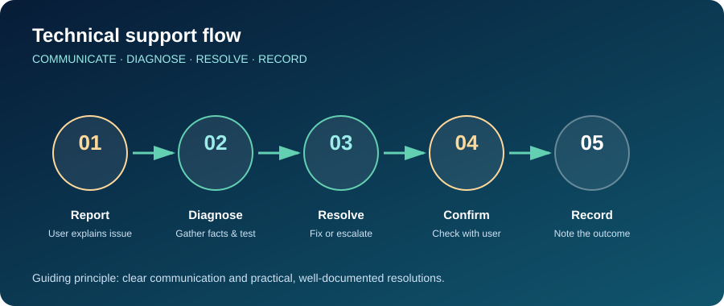

Challenge
Helping users continue their work while systems and equipment are maintained or when small technical issues appear.
Helping systems run smoothly while building practical experience in technical support and IT operations.

Every organisation depends on systems that work reliably and users who can get help when something goes wrong. During my internship, I was exposed to both sides of this work: keeping business systems running and supporting the people who use them.
I contributed to the smooth operation of inventory systems and provided basic technical support. I worked with the IT team on everyday tasks, learning how issues are identified, handled, and escalated in a professional setting.
The internship gave me a realistic picture of IT operations in business. I strengthened my problem-solving habits, learned to communicate technical matters clearly, and confirmed my interest in a career in IT support and systems.
The softer skills that make technical work effective.
Helping users continue their work while systems and equipment are maintained or when small technical issues appear.
Listened carefully, explained clearly, worked with the team, and escalated issues that needed more experience.
Stronger communication, teamwork, and problem-solving habits alongside real exposure to IT operations.